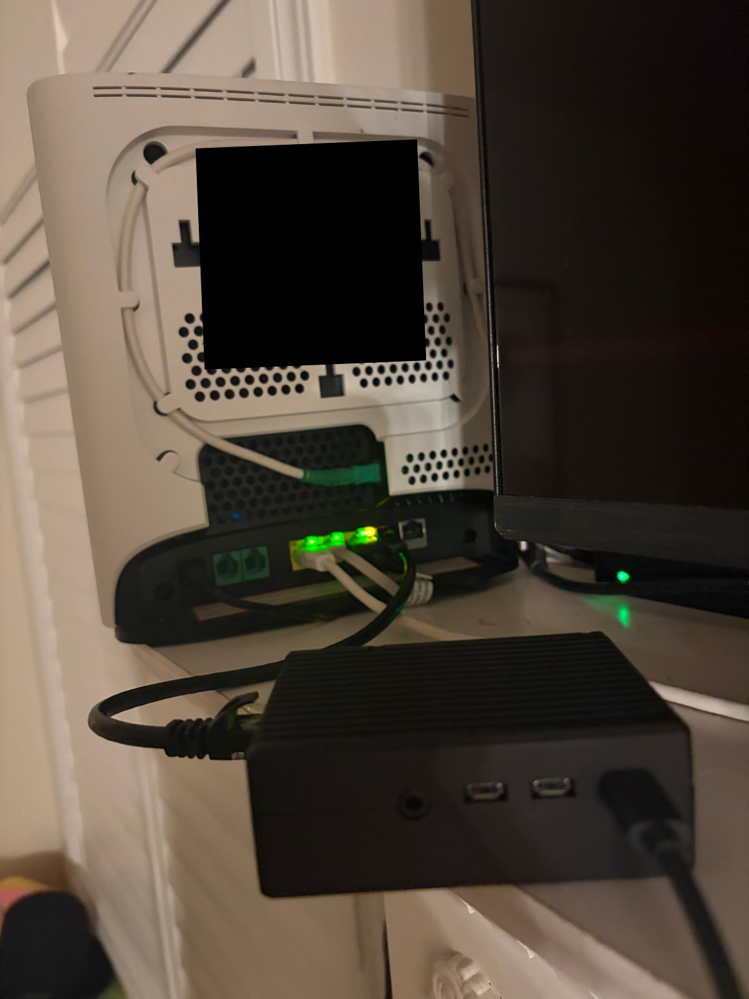
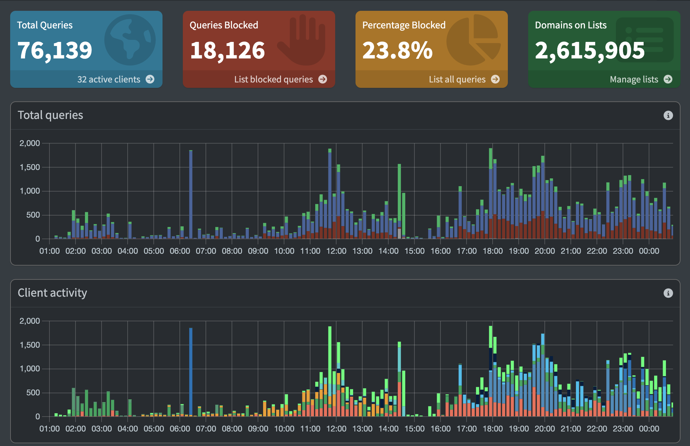

Home lab · Raspberry Pi
Network-wide DNS filtering and monitoring
Moved DHCP and DNS off the ISP router and onto a Raspberry Pi 4, so any device that joins my home network has every domain it looks up checked against 2.6 million ad, tracker, malware and phishing domains by default. Anything on the list is answered with a dead address, so the host behind it is never contacted, and nothing has to be installed on the device itself. It handles about 76,000 lookups a day across 32 devices and blocks 23.8% of them.
The problem
Ad blockers are per-device and per-browser. Installing one on every phone, laptop and tablet in a house this size doesn't hold up, and the devices that most need filtering are the ones that can't take an extension at all, like the smart TV. An extension also only sees the browser, so a TV app reporting to a tracker is invisible to it.
DNS is the one chokepoint every device shares. Nothing reaches a server without resolving its name first, so filtering at that layer covers everything at once, including the devices I don't control, and it works the same whether the request comes from a browser, an app or firmware.
How it works
- A device joins the network and gets its address, gateway and DNS server from the Pi over DHCP.
- When it needs a site, it asks the Pi for that domain's IP on port 53.
- If the domain is on a blocklist, the Pi answers
0.0.0.0, so the ad, tracker or malware host is never contacted. - If it's allowed, the Pi answers from its cache, or forwards the question to Cloudflare and caches the reply.
- Every query is logged with the time, the device, the domain and the result.
The cache is what keeps it quick: a domain the network has already asked for comes back in a millisecond or two without leaving the house, and only a first-time lookup costs a round trip. Only the lookup goes through the Pi. Once a device has the real IP it connects to the site directly through the router, so the Pi never sees the traffic itself.
Running DHCP on the Pi
Filtering only reaches a device if that device is told to use the Pi for DNS, which is why the Pi hands out the addresses rather than the router. A DHCP server can't lease itself an address, and every client receives that same address as its DNS server, so the Pi is set statically at 192.168.2.145 with the router at 192.168.2.1 as the gateway. The lease pool starts above it, from .150 to .250, so nothing it hands out can collide with it.
Switching over meant turning the router's own DHCP off first. Two DHCP servers on one subnet race each other and whichever replies first wins, so devices would have ended up with a mix of settings, some pointed at the Pi and some not. With only the Pi answering, every device that joins gets an address, the router as its gateway and the Pi as its DNS server, and anything that leaves and rejoins picks it up again on its next lease. Nothing is configured per device.

Filtering away from home
Tailscale, built on WireGuard, joins my phone, laptop and the Pi into one private network. With Override DNS turned on, both devices send every lookup through an encrypted tunnel to the Pi, so the same filtering applies on cellular and public Wi-Fi. The tunnel also carries SSH, which means no ports are opened on the router and the Pi is never exposed to the internet.
What it blocks
Four lists do the work, weighted towards threat intelligence rather than ads alone. Pi-hole merges them, de-duplicates, and re-downloads them on a schedule so the feed stays current.
| List | Blocks | Entries |
|---|---|---|
| HaGeZi Threat Intelligence Feeds | Malware, phishing, scams, command-and-control | 2,371,600 |
| StevenBlack Unified | Ads, trackers, malware | 82,600 |
| HaGeZi Multi PRO++ mini | Ads, trackers, telemetry | 69,500 |
| HaGeZi Pop-Up Ads | Pop-up and pop-under networks | 50,700 |
Entry counts are the lists' own published sizes; Pi-hole reports 2,615,905 domains after merging.
